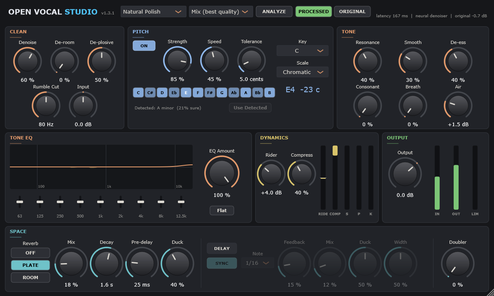

Open Vocal Studio
A complete lead-vocal channel in one plugin. It cleans up the recording, corrects the pitch naturally, tames resonances, sibilance and harshness, sets the tone, controls the dynamics and adds reverb and delay.
- Free
- Open source (AGPLv3)
- VST3 + standalone app
- Windows 64-bit

Quick start
- Insert Open Vocal Studio on a vocal track (mono or stereo in, stereo out).
- Pick a preset: Natural Polish, Pop Lead, Intimate Ballad, Rock Lead, Spoken Word or Tracking (Low Latency).
- Play 10–30 seconds of the vocal with ANALYZE on, then click it again. It matches the tone EQ to a polished vocal curve and sets the key and scale for pitch correction.
- Use PROCESSED | ORIGINAL to compare. The original is level-matched, so louder never fools you.
What it does
The voice is processed in mono, as a voice is a mono source; the doubler, delay and reverb are stereo around it. A true-peak limiter at the end keeps it from ever clipping.
Clean
- Denoise: removes noise, hum, hiss, room tone and headphone bleed. In Mix mode it runs DeepFilterNet3, a neural network, with its own fast streaming engine (under 4 % of one CPU core). A voice guard keeps long sung notes from thinning.
- De-room pulls back room reflections; De-plosive catches P and B bursts; Rumble Cut removes low rumble.
Pitch
- Natural correction: it moves the center of each note and leaves vibrato, scoops and bends as sung.
- Formants stay put, so the voice keeps its character. At Strength 0 it's bit-transparent.
- Key and scale set by ANALYZE (or by hand), including major, minor, pentatonic, blues and modes. Turn individual notes off.
Tone
- Resonance turns down narrow ringing regions only while they ring.
- Smooth softens a harsh 2–5 kHz edge; De-ess works on S sounds only.
- Consonant softens hard K and T clicks; Breath lowers breaths between phrases; Air adds sheen.
Tone EQ
Nine bands from 63 Hz to 12.5 kHz. ANALYZE fits them toward the curve of a finished lead vocal (80 % of the difference, at most ±6 dB per band). Edit them afterwards, or scale them all with EQ Amount.
Dynamics
- Rider evens out the level between phrases before the compressor.
- Compress follows the voice's own level, so a setting does the same at any input level, with program-dependent release and automatic make-up.
Space
- Reverb: Plate (bright, dense) or Room (shorter, darker), with Duck so it blooms in the gaps.
- Delay: a short slap, or synced to your DAW tempo with straight, triplet and dotted values.
- Doubler: double-tracked width, from subtle to a clear second take.
Two modes
Mix (best quality)
For mixing. Uses the neural denoiser and the finest analysis. About 167 ms of latency at 48 kHz, reported to your DAW, which compensates automatically on playback.
Track (low latency)
For recording through the plugin: 5.8 ms with pitch correction off, 55 ms with it on. Switch to it (or the Tracking preset) while you record, then back to Mix.
Standalone app
Process a vocal without a DAW, live or from a file.
Live
Sing through your audio interface (ASIO supported). Use headphones to avoid feedback.
From a file
Open a WAV, AIFF, FLAC, MP3 or Ogg Vorbis recording, play and loop it through the chain, then Save Processed… as a 24-bit WAV that lines up with the original.
Install
- Download
OpenVocalStudio-x.y.z-win64.zipfrom the latest release and unzip it. - Double-click
Install VST3.batand click Yes when Windows asks for permission. (Or copy the.vst3folder intoC:\Program Files\Common Files\VST3.) - Rescan plugins in your DAW and insert Open Vocal Studio on your vocal track.
- The standalone app runs from anywhere: no install needed.
Details
| System | Windows, 64-bit. Any VST3 host; the app supports ASIO and Windows audio. |
|---|---|
| Latency | Mix mode about 167 ms; Track mode 5.8 ms (55 ms with pitch correction). Always reported to your DAW. |
| Presets | Natural Polish, Pop Lead, Intimate Ballad, Rock Lead, Spoken Word and Tracking (Low Latency), plus your own. |
| First start | Windows SmartScreen may warn that the app is from an unknown publisher (it isn't code-signed): click More info → Run anyway. |
| License | Free software under the GNU AGPLv3. Copyright © 2026 Al Oomens. Use it for anything; if you share it, include the source zip. No warranty. The neural denoiser uses the DeepFilterNet3 model (see the third-party notices in the download). |